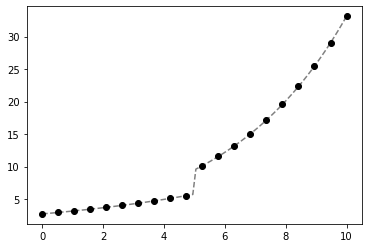
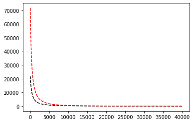
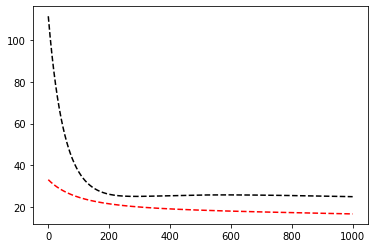
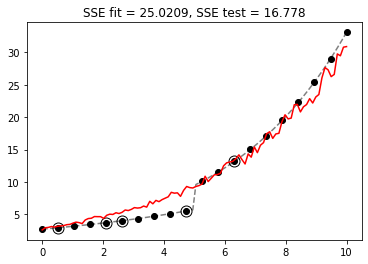

Optimización usando ridge regression¶
34:40 min | Ultima modificación: Marzo 30, 2021 | YouTube
Preparación
[1]:
import math
import matplotlib.pyplot as plt
import numpy as np
%matplotlib inline
Función a aproximar usando un modelo de regresión¶
\[\begin{split}f(\mathbf{x})=
\begin{cases}
\exp \; (0.15 \cdot x + 1) + 0 \cdot y + 0 \cdot z & \text{si } x \lt 5 \\ \\
\exp\; (0.25 \cdot x + 1) + 0 \cdot y + 0 \cdot z & \text{de lo contrario}
\end{cases}\end{split}\]
con \(\mathbf{x}=[x, y, z]'\).
[2]:
def f(x):
return math.exp(0.15 * x[0] + 1) if x[0] < 5 else math.exp(0.25 * x[0] + 1)
Generación de la muestra de datos¶
[3]:
#
# Semilla del generador de aleatorios
#
np.random.seed(1234)
#
# Datos para entrenamiento del modelo
#
def create_data(n):
x = np.linspace(start=0, stop=10, num=n)
y = np.random.uniform(low=0, high=1, size=(n, 1))
z = np.random.uniform(low=0, high=1, size=(n, 1))
return np.column_stack((x, y, z))
X_data = create_data(n=20)
X_data
[3]:
array([[ 0. , 0.19151945, 0.36488598],
[ 0.52631579, 0.62210877, 0.61539618],
[ 1.05263158, 0.43772774, 0.07538124],
[ 1.57894737, 0.78535858, 0.36882401],
[ 2.10526316, 0.77997581, 0.9331401 ],
[ 2.63157895, 0.27259261, 0.65137814],
[ 3.15789474, 0.27646426, 0.39720258],
[ 3.68421053, 0.80187218, 0.78873014],
[ 4.21052632, 0.95813935, 0.31683612],
[ 4.73684211, 0.87593263, 0.56809865],
[ 5.26315789, 0.35781727, 0.86912739],
[ 5.78947368, 0.50099513, 0.43617342],
[ 6.31578947, 0.68346294, 0.80214764],
[ 6.84210526, 0.71270203, 0.14376682],
[ 7.36842105, 0.37025075, 0.70426097],
[ 7.89473684, 0.56119619, 0.70458131],
[ 8.42105263, 0.50308317, 0.21879211],
[ 8.94736842, 0.01376845, 0.92486763],
[ 9.47368421, 0.77282662, 0.44214076],
[10. , 0.88264119, 0.90931596]])
[4]:
d_data = np.apply_along_axis(f, 1, X_data)
d_data
[4]:
array([ 2.71828183, 2.94158152, 3.18322469, 3.44471821, 3.72769274,
4.03391288, 4.36528819, 4.72388512, 5.11193983, 5.53187222,
10.13291944, 11.55789116, 13.18325374, 15.03718774, 17.15183668,
19.56386438, 22.31509059, 25.45321612, 29.03264982, 33.11545196])
[5]:
X_real = create_data(n=100)
X_real
[5]:
array([[0.00000000e+00, 5.98092228e-02, 9.34857450e-03],
[1.01010101e-01, 1.84287084e-01, 9.00648621e-01],
[2.02020202e-01, 4.73552788e-02, 9.77241431e-01],
[3.03030303e-01, 6.74880944e-01, 5.56894679e-01],
[4.04040404e-01, 5.94624780e-01, 8.47738434e-02],
[5.05050505e-01, 5.33310163e-01, 3.33002466e-01],
[6.06060606e-01, 4.33240627e-02, 7.28428676e-01],
[7.07070707e-01, 5.61433080e-01, 1.42435373e-01],
[8.08080808e-01, 3.29668446e-01, 5.52468939e-01],
[9.09090909e-01, 5.02966833e-01, 2.73043260e-01],
[1.01010101e+00, 1.11894318e-01, 9.74495138e-01],
[1.11111111e+00, 6.07193706e-01, 6.67786906e-01],
[1.21212121e+00, 5.65944643e-01, 2.55653286e-01],
[1.31313131e+00, 6.76406199e-03, 1.08311494e-01],
[1.41414141e+00, 6.17441709e-01, 7.76180723e-01],
[1.51515152e+00, 9.12122886e-01, 7.82477993e-01],
[1.61616162e+00, 7.90524133e-01, 7.61603914e-01],
[1.71717172e+00, 9.92081466e-01, 9.14403113e-01],
[1.81818182e+00, 9.58801762e-01, 6.58622782e-01],
[1.91919192e+00, 7.91964135e-01, 5.68367582e-01],
[2.02020202e+00, 2.85250960e-01, 2.01755692e-01],
[2.12121212e+00, 6.24916705e-01, 6.98296376e-01],
[2.22222222e+00, 4.78093796e-01, 9.52195410e-01],
[2.32323232e+00, 1.95675179e-01, 8.89963287e-01],
[2.42424242e+00, 3.82317452e-01, 9.93567363e-01],
[2.52525253e+00, 5.38736851e-02, 8.18703510e-01],
[2.62626263e+00, 4.51648408e-01, 5.45122166e-01],
[2.72727273e+00, 9.82004742e-01, 4.51254055e-01],
[2.82828283e+00, 1.23942700e-01, 8.90557188e-01],
[2.92929293e+00, 1.19380898e-01, 9.73264791e-01],
[3.03030303e+00, 7.38523056e-01, 5.93411330e-01],
[3.13131313e+00, 5.87303633e-01, 3.66074498e-01],
[3.23232323e+00, 4.71632534e-01, 3.23094693e-01],
[3.33333333e+00, 1.07126817e-01, 8.71423255e-01],
[3.43434343e+00, 2.29218565e-01, 2.15634063e-01],
[3.53535354e+00, 8.99965195e-01, 7.34945189e-01],
[3.63636364e+00, 4.16753538e-01, 3.65619087e-01],
[3.73737374e+00, 5.35851663e-01, 8.01602599e-01],
[3.83838384e+00, 6.20851659e-03, 7.82735592e-01],
[3.93939394e+00, 3.00641706e-01, 7.01355379e-01],
[4.04040404e+00, 4.36893172e-01, 6.22776587e-01],
[4.14141414e+00, 6.12148997e-01, 4.93682646e-01],
[4.24242424e+00, 9.18198075e-01, 8.40537700e-01],
[4.34343434e+00, 6.25736670e-01, 7.12096987e-01],
[4.44444444e+00, 7.05997565e-01, 4.43908981e-01],
[4.54545455e+00, 1.49833716e-01, 3.10348611e-02],
[4.64646465e+00, 7.46063409e-01, 3.63239760e-01],
[4.74747475e+00, 8.31006992e-01, 7.30721791e-01],
[4.84848485e+00, 6.33725769e-01, 4.75566573e-01],
[4.94949495e+00, 4.38309881e-01, 3.44416970e-01],
[5.05050505e+00, 1.52572775e-01, 6.40880435e-01],
[5.15151515e+00, 5.68409615e-01, 1.26205322e-01],
[5.25252525e+00, 5.28224278e-01, 1.71465261e-01],
[5.35353535e+00, 9.51428764e-01, 7.37086494e-01],
[5.45454545e+00, 4.80359179e-01, 1.27029394e-01],
[5.55555556e+00, 5.02559563e-01, 3.69649875e-01],
[5.65656566e+00, 5.36878193e-01, 6.04334005e-01],
[5.75757576e+00, 8.19202067e-01, 1.03104439e-01],
[5.85858586e+00, 5.71156381e-02, 8.02374182e-01],
[5.95959596e+00, 6.69421743e-01, 9.45553236e-01],
[6.06060606e+00, 7.67116628e-01, 9.79038820e-01],
[6.16161616e+00, 7.08115362e-01, 8.81232246e-01],
[6.26262626e+00, 7.96867184e-01, 6.27681921e-01],
[6.36363636e+00, 5.57760828e-01, 9.30486533e-01],
[6.46464646e+00, 9.65836532e-01, 7.24789953e-01],
[6.56565657e+00, 1.47156900e-01, 7.16677886e-01],
[6.66666667e+00, 2.96470005e-02, 4.10785666e-02],
[6.76767677e+00, 5.93893493e-01, 4.39481775e-01],
[6.86868687e+00, 1.14065699e-01, 2.82069783e-01],
[6.96969697e+00, 9.50809850e-01, 3.34995969e-01],
[7.07070707e+00, 3.25707414e-01, 8.35270070e-02],
[7.17171717e+00, 1.93618690e-01, 7.60849147e-01],
[7.27272727e+00, 4.57811649e-01, 5.09272447e-01],
[7.37373737e+00, 9.20402571e-01, 6.61047418e-01],
[7.47474747e+00, 8.79069162e-01, 6.30314442e-01],
[7.57575758e+00, 2.52615755e-01, 3.70926827e-01],
[7.67676768e+00, 3.48008793e-01, 4.46740152e-01],
[7.77777778e+00, 1.82588732e-01, 4.15108220e-01],
[7.87878788e+00, 9.01796051e-01, 4.80388508e-01],
[7.97979798e+00, 7.06528163e-01, 9.83323573e-01],
[8.08080808e+00, 7.26658462e-01, 3.73423707e-01],
[8.18181818e+00, 9.00087837e-01, 1.24069817e-02],
[8.28282828e+00, 7.79163801e-01, 9.21903338e-01],
[8.38383838e+00, 5.99154781e-01, 8.73276070e-01],
[8.48484848e+00, 2.91125245e-01, 3.51746822e-01],
[8.58585859e+00, 1.51395264e-01, 6.30133113e-01],
[8.68686869e+00, 3.35174659e-01, 3.57826959e-01],
[8.78787879e+00, 6.57551777e-01, 2.12819938e-01],
[8.88888889e+00, 7.33425436e-02, 2.23319223e-01],
[8.98989899e+00, 5.50063954e-02, 4.19563792e-01],
[9.09090909e+00, 3.23194814e-01, 7.29102211e-02],
[9.19191919e+00, 5.90481804e-01, 6.50839070e-01],
[9.29292929e+00, 8.53898567e-01, 7.55686149e-01],
[9.39393939e+00, 2.87062425e-01, 9.32101226e-01],
[9.49494949e+00, 1.73067227e-01, 3.76404160e-01],
[9.59595960e+00, 1.34021206e-01, 2.96927283e-01],
[9.69696970e+00, 9.94653829e-01, 3.71944312e-01],
[9.79797980e+00, 1.79497869e-01, 8.27699359e-01],
[9.89898990e+00, 3.17546823e-01, 9.01139535e-01],
[1.00000000e+01, 5.68291405e-01, 4.27303785e-01]])
[6]:
d_real = np.apply_along_axis(f, 1, X_real)
d_real
[6]:
array([ 2.71828183, 2.75978151, 2.80191477, 2.84469127, 2.88812084,
2.93221343, 2.97697919, 3.02242838, 3.06857143, 3.11541895,
3.16298168, 3.21127054, 3.26029663, 3.31007119, 3.36060565,
3.41191162, 3.46400087, 3.51688536, 3.57057723, 3.62508881,
3.68043261, 3.73662134, 3.79366789, 3.85158537, 3.91038707,
3.97008648, 4.03069732, 4.0922335 , 4.15470914, 4.21813859,
4.28253642, 4.34791739, 4.41429653, 4.48168907, 4.55011049,
4.61957648, 4.69010301, 4.76170625, 4.83440266, 4.90820891,
4.98314195, 5.05921899, 5.13645748, 5.21487517, 5.29449005,
5.3753204 , 5.45738478, 5.54070203, 5.62529127, 5.71117192,
9.60828995, 9.85401304, 10.10602028, 10.36447236, 10.62953411,
10.90137457, 11.1801671 , 11.46608949, 11.75932408, 12.06005787,
12.36848265, 12.68479511, 13.00919696, 13.34189509, 13.68310166,
14.03303428, 14.3919161 , 14.75997598, 15.13744866, 15.52457485,
15.92160143, 16.3287816 , 16.74637502, 17.17464801, 17.61387368,
18.06433214, 18.52631065, 19.00010384, 19.48601385, 19.98435055,
20.49543176, 21.01958339, 21.55713971, 22.10844353, 22.67384644,
23.25370901, 23.84840102, 24.45830172, 25.08380007, 25.72529496,
26.38319548, 27.0579212 , 27.7499024 , 28.45958038, 29.18740772,
29.93384856, 30.69937893, 31.48448704, 32.28967355, 33.11545196])
Gráfica de la función¶
[7]:
plt.plot(X_real[:, 0], d_real, "--", color="gray")
plt.plot(X_data[:, 0], d_data, "o", color="black")
plt.show()

Partición del conjunto de datos¶
[8]:
# selecciona aleatoriamente 15 elementos del conjunto de datos
index_fit = sorted(np.random.choice(len(X_data), 15, replace=False))
index_fit
[8]:
[0, 2, 3, 6, 7, 8, 10, 11, 13, 14, 15, 16, 17, 18, 19]
[9]:
index_test = [i for i in range(len(X_data)) if i not in index_fit]
index_test
[9]:
[1, 4, 5, 9, 12]
[10]:
# muestra usada para estimar los parámetros del modelo
X_fit = X_data[index_fit, :]
d_fit = d_data[index_fit]
# muestra usada para evaluar la generalización
X_test = X_data[index_test, :]
d_test = d_data[index_test]
# grafica
plt.plot(X_real[:, 0], d_real, "--", color="gray")
plt.plot(X_data[:, 0], d_data, "o", color="black")
plt.plot(X_test[:, 0], d_test, "o", color="black", fillstyle="none", markersize=11)
plt.show()

Modelo de regresión¶
\[g(\mathbf{x}) = \exp(w_0 + w_1 x + w_2 y + w_3 z)\]
[11]:
def g(w, x):
return math.exp(w[0] + w[1] * x[0] + w[2] * x[1] + w[3] * x[2])
#
# g_(w) crea una función g_aux(x) que usa el parametro w
#
def g_(w):
def g_aux(x):
return g(w, x)
return g_aux
[12]:
#
# Ejemplo:
#
# m(x) = exp(0.1 + 0.2 * x_0 + 0.2 * x_1 + 0.3 * x_2)
#
m = g_([0.1, 0.2, 0.3, 0.4])
m
[12]:
<function __main__.g_.<locals>.g_aux(x)>
[13]:
#
# m([1, 2, 3]) = exp(0.1 + 0.2 * 1 + 0.3 * 2 + 0.4 * 3)
#
m([1, 2, 3])
[13]:
8.166169912567652
[14]:
math.exp(0.1 + 0.2 * 1 + 0.3 * 2 + 0.4 * 3)
[14]:
8.166169912567652
Función de pérdida cuadrática (suma de errores al cuadrado)¶
\[\text{SSE}(\mathbf{w}) = \sum_p [d_p - g(\mathbf{x}_p)]^2\]
[15]:
def SSE(w):
y = np.apply_along_axis(g_(w), 1, X_data)
y_fit = y[index_fit]
y_test = y[index_test]
sse_fit = sum(np.power(d_fit - y_fit, 2))
sse_test = sum(np.power(d_test - y_test, 2))
return sse_fit, sse_test
Gradiente del modelo de regresión¶
Si
\[\begin{split}\mathbf{x}
= \left[
\begin{matrix}
x \\
y \\
z \\
\end{matrix}
\right]\end{split}\]
Entonces:
\[\begin{split}\begin{split}
\frac{\partial}{\partial \mathbf{w}} g(\mathbf{x})
& = \frac{\partial}{\partial \mathbf{w}}
\left[ \exp( w_0 + w_1 \cdot x + w_2 \cdot y + w_3 \cdot z ) \right] \\ \\
& = \left[
\begin{matrix}
g(\mathbf{x}) \\
x \cdot g(\mathbf{x}) \\
y \cdot g(\mathbf{x}) \\
z \cdot g(\mathbf{x}) \\
\end{matrix}
\right]
\end{split}\end{split}\]
[16]:
def gg(w):
gx = np.apply_along_axis(g_(w), 1, X_data)
grd = np.zeros(shape=(len(X_data), len(w)))
for i in range(len(w)):
if i == 0:
grd[:, i] = gx.copy()
else:
grd[:, i] = X_data[:, i - 1] * gx
return grd[index_fit, :]
gg([0, 0.1, 0.2, 0.3])
[16]:
array([[ 1.15924587, 0. , 0.22201813, 0.42299257],
[ 1.24038657, 1.30567007, 0.54295161, 0.09350188],
[ 1.53052935, 2.41662529, 1.20201436, 0.56449597],
[ 1.63271308, 5.15593605, 0.45138681, 0.64851784],
[ 2.14988538, 7.92063036, 1.72393327, 1.69567941],
[ 2.02938205, 8.54476654, 1.94443081, 0.64298154],
[ 2.35989579, 12.42050415, 0.84441147, 2.05105007],
[ 2.24790444, 13.01418358, 1.12618917, 0.98047617],
[ 2.38662678, 16.32955164, 1.70095374, 0.34311775],
[ 2.77922065, 20.47846797, 1.02900854, 1.95729664],
[ 3.04374089, 24.02953332, 1.70813578, 2.14456294],
[ 2.74110063, 23.08295264, 1.37900158, 0.59973118],
[ 3.2379837 , 28.97143309, 0.04458202, 2.9947063 ],
[ 3.43692086, 32.56030289, 2.65614394, 1.51960279],
[ 4.26022947, 42.60229473, 3.76025401, 3.87389465]])
Gradiente de la función de pérdida¶
\[\begin{split}\begin{split}
\text{SSE}(\mathbf{w}) & = \sum_p [d_p - g(\mathbf{x}_p)]^2 \\ \\
\frac{\partial}{\partial \mathbf{w}}\text{SSE}(\mathbf{w})
& = \frac{\partial}{\partial \mathbf{w}} \sum_p [d_p - g(\mathbf{x}_p)]^2
\\ \\
& = \sum_p \frac{\partial}{\partial \mathbf{w}} [d_p - g(\mathbf{x}_p)]^2
\\ \\
& = \sum_p 2 \cdot [d_p - g(\mathbf{x}_p)] \frac{\partial}{\partial \mathbf{w}} [d_p - g(\mathbf{x}_p)]
\\ \\
& = \sum_p -2 \cdot [d_p - g(\mathbf{x}_p)] \frac{\partial}{\partial \mathbf{w}} g(\mathbf{x}_p)
\\ \\
& = \sum_p -2 \cdot e_p \frac{\partial}{\partial \mathbf{w}} g(\mathbf{x}_p)
\end{split}\end{split}\]
[17]:
def gSSE(w):
gx = np.apply_along_axis(g_(w), 1, X_data)
y_fit = gx[index_fit]
d_fit = d_data[index_fit]
e_fit = d_fit - y_fit
e_fit = e_fit.reshape((len(index_fit), 1))
grd = gg(w)
grd = -2 * e_fit * grd
grd = np.sum(grd, axis=0)
return grd
gSSE([0, 0, 0, 0])
[17]:
array([ -383.81489155, -3007.27954981, -214.18328195, -230.32518 ])
Corrección de los parámetros¶
\[\mathbf{w}_k = \mathbf{w}_{k-1} - \mu \frac{\partial}{\partial \mathbf{w}} \text{SSE}(\mathbf{w}_{k-1})\]
[18]:
def mejora(w, mu):
grd = gSSE(w)
w = w - mu * grd
return w
mejora(w=[0, 0, 0, 0], mu=0.0001)
[18]:
array([0.03838149, 0.30072795, 0.02141833, 0.02303252])
Proceso iterativo usando gradiente descendente¶
[19]:
w = [1.0, 0.25, 0.1, 0.1] # coeficientes iniciales
mu = 0.00000005
sse_fit, sse_test = SSE(w)
history_sse_fit = [sse_fit]
history_sse_test = [sse_test]
for epoch in range(1000):
w = mejora(w, mu)
sse_fit, sse_test = SSE(w)
history_sse_fit.append(sse_fit)
history_sse_test.append(sse_test)
y_real = np.apply_along_axis(g_(w), 1, X_real)
plt.plot(history_sse_fit, "--k")
plt.plot(history_sse_test, "--r")
plt.show()

[20]:
plt.plot(X_real[:, 0], d_real, "--", color="gray")
plt.plot(X_data[:, 0], d_data, "o", color="black")
plt.plot(X_test[:, 0], d_test, "o", color="black", fillstyle="none", markersize=11)
plt.plot(X_real[:, 0], y_real, color="red")
plt.title('SSE fit = {}, SSE test = {}'.format(round(SSE(w)[0], 4), round(SSE(w)[1], 4)))
plt.show()

[21]:
w
[21]:
array([0.99490325, 0.23629751, 0.09373265, 0.09584495])
Ridge regression¶
Función de pérdida penalizada¶
\[\text{P}(w) = \sum_p [d_p - g(\mathbf{x}_p)]^2 + \lambda \sum_m w_m^2\]
Gradiente de la función de pérdida¶
\[\begin{split}
\frac{\partial}{\partial w}\text{P}(w)
& = \sum_p -2 \cdot e_p \frac{\partial}{\partial \mathbf{w}} g(\mathbf{x}_p) + \sum_m 2 \lambda w_m
\end{split}\]
[22]:
def gPen(w):
return np.array([2 * u for u in w])
[23]:
def mejora_ridge(w, mu, lamb):
grd_SSE = gSSE(w)
grd_pen = gPen(w)
w = w - mu * (grd_SSE + lamb * grd_pen)
return w
[24]:
w = [1.0, 0.25, 0.1, 0.1] # coeficientes iniciales
mu = 0.00000001
lamb = 2500
sse_fit, sse_test = SSE(w)
history_sse_fit = [sse_fit]
history_sse_test = [sse_test]
for epoch in range(1000):
w = mejora_ridge(w, mu, lamb)
sse_fit, sse_test = SSE(w)
history_sse_fit.append(sse_fit)
history_sse_test.append(sse_test)
y_real = np.apply_along_axis(g_(w), 1, X_real)
plt.plot(history_sse_fit, "--k")
plt.plot(history_sse_test, "--r")
plt.show()

[25]:
plt.plot(X_real[:, 0], d_real, "--", color="gray")
plt.plot(X_data[:, 0], d_data, "o", color="black")
plt.plot(X_test[:, 0], d_test, "o", color="black", fillstyle="none", markersize=11)
plt.plot(X_real[:, 0], y_real, color="red")
plt.title('SSE fit = {}, SSE test = {}'.format(round(SSE(w)[0], 4), round(SSE(w)[1], 4)))
plt.show()

[26]:
w
[26]:
array([0.95071139, 0.23861271, 0.09416578, 0.09459402])
Ejercicio.— Cómpute el valor óptimo de la penalización.